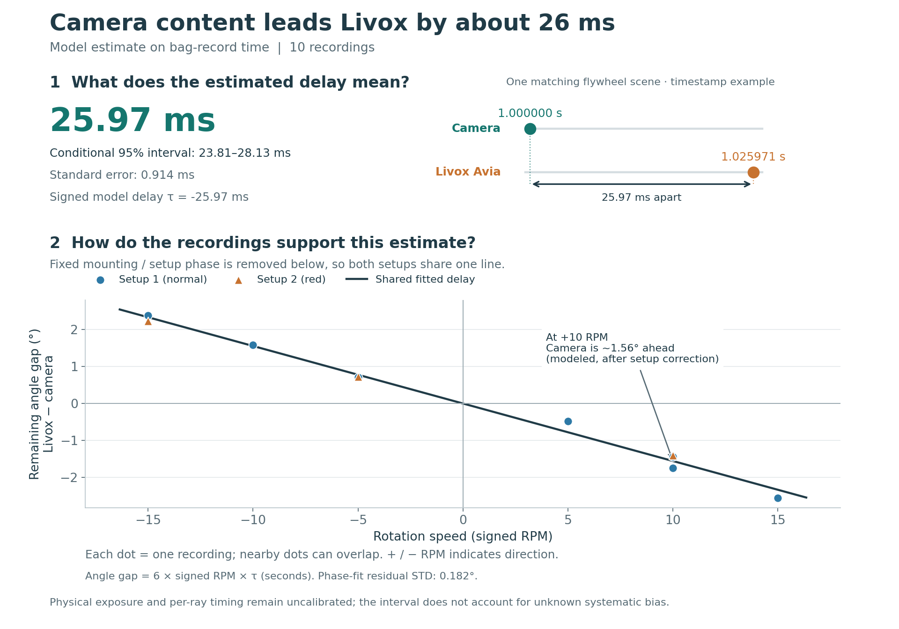

# Cross-speed timing comparison Status: **PHASE_MODEL_CANDIDATE**. Candidate tau: **-25.97 ms**. Student-t 95% interval: [-28.13, -23.81] ms. Standard error: 0.91 ms. Phase-fit residual STD: 0.182 degrees. Distinct bags: 10. Setup groups: normal, red. Residual degrees of freedom: 7. Model: `theta_livox(t_bag) = phase + theta_flir(t_bag + tau); positive tau means Livox content leads FLIR on bag time.`. Fixed phase is fitted separately within each acquisition group. Different signed speeds within a group separate the model's phase intercept from its time-shift slope. The Livox phase is anchored to the common empirical H5/3 convention modulo 120 degrees; arbitrary per-bag template time-zero phases are not compared directly. Cross-speed separation assumes a stable H5 phase convention and fixed sensor phase within each setup. Pose, calibration and scan-phase changes can bias this candidate. These results are **not a calibrated physical sensor offset**, even if the statistical interval excludes zero. Camera exposure midpoint and native per-ray Livox acquisition timing require separate calibration. Group definitions must genuinely share the same sensor pose and phase convention; the copied recordings' normal/red default grouping is editable before processing. The hardware data were also used to develop the observation estimators. Independent repeated captures are required to validate systematic accuracy. Exact observations and residuals are in `phase_observations.csv` and `phase_fit.csv`. The fitted model, uncertainty and group intercepts are in `model.json`. The figure is `figures/cross_speed_timing.png`. Selected run IDs are recorded in `request.json`.
